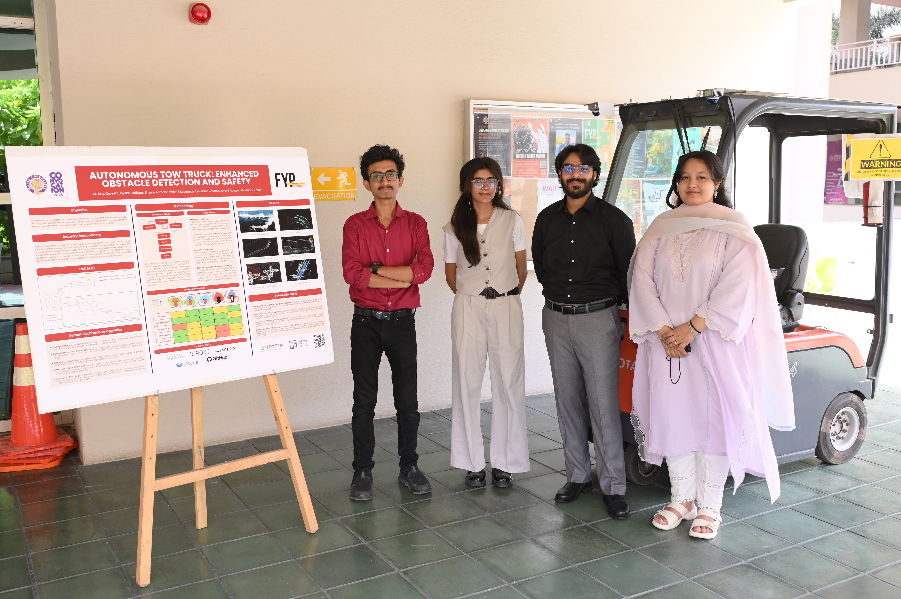

Javeria Azfar
Robotics researcher working on autonomous-vehicle perception and human-aware navigation.

About
I'm a computer engineer (B.Sc., Habib University, 2025) with two years of hands-on robotics experience, currently a researcher and technical lead at Habib University's Office of Research.
I work on the perception and decision-making systems of an autonomous industrial tow truck, the first autonomous vehicle of its kind deployed in a Pakistani industrial setting, built in collaboration with Toyota Indus Motor Company. My research interest sits at the intersection of learned perception and human-aware navigation: how robots can read the visual and social cues humans use to move through shared spaces, with industrial autonomous mobile robots as the primary application domain currently and I would love to expand my expertise to road cars.
The Autonomous Tow Truck

.jpeg)

Research & Projects
Autonomous Industrial Tow Truck — Perception & Decision-Making
- Contributed to a dual-Livox-MID360 3D-LiDAR perception layer that replaced a single forward-facing camera (87° horizontal field of view, no lateral or rear sensing) with full 360° coverage and no blind spots at 20 m+ detection range — field-validated for around-the-corner obstacle anticipation and full coverage through U-turns.
- Helped optimize sensor placement, inverting the LiDAR to bias vertical coverage toward the ground for improved detection of low obstacles (pallets, carts, curbs), and refined the perception codebase to reduce detection latency.
- Own the systems-engineering workflow in Innoslate (requirements, traceability, verification plans) and manage milestones, issue tracking, and sprint planning in Jira across the perception, control, and navigation sub-teams.
- Mentor and supervise three undergraduates building components of the perception pipeline for their capstone projects.
- Collaborate with Toyota's engineering team on deployment testing and integration in a live industrial environment.
Robust Vision System for Autonomous Tow Truck
- Developed and optimized real-time object detection and depth estimation pipelines using a customized YOLOv5 architecture and an Intel RealSense D435i camera.
- Integrated visual perception modules into a ROS 2 Nav2 framework for autonomous navigation and obstacle avoidance in semi-structured industrial environments.
- Containerized the full perception–planning system in Docker for reproducible deployment and modular testing.
- Validated the system through hardware-in-the-loop simulations in Gazebo and field testing at IMC Port Qasim.
Zero-Shot & Few-Shot Learning for Human-Motion Analysis (Survey)
- Co-authored a survey of 30+ recent methods (MotionGPT, ZeDO, FG-MDM, PAML) across Human3.6M and AMASS using MPJPE, PA-MPJPE, and PCKh.
- Proposed a taxonomy unifying meta-learning, generative, and optimization-based strategies for human-motion analysis with vision-language models.
Diet Plan Optimization Using Evolutionary Algorithms
- Built a multi-objective genetic algorithm generating optimized athlete diet plans balancing nutrition and performance; tuned fitness functions and evolutionary operators (elitism, crossover, mutation) for convergence and diversity. Published at EvoStar 2025 (see below).
Publications
Skills
Robotics & Perception
ROS 2 (Humble), Autoware, Gazebo, RViz, 3D LiDAR (Livox MID360), NDT localization, point-cloud processing, RealSense RGB-D
Machine Learning & CV
PyTorch, TensorFlow, OpenCV, YOLO
Programming
Python, C/C++, Verilog, JavaScript, HTML/CSS, LaTeX, SQL
Tools & Workflow
Linux, Docker, Git/GitHub, Jira, Innoslate (systems engineering)